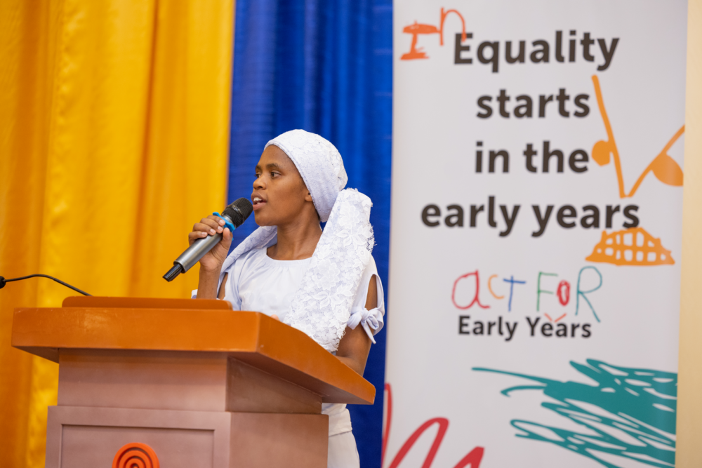
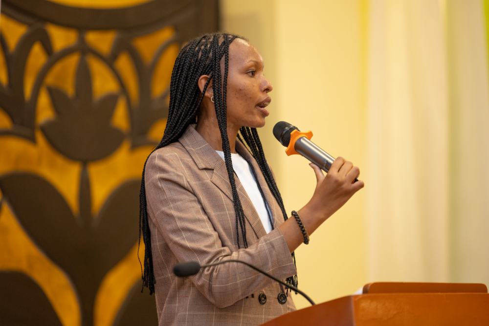

African leaders have called for action to ensure every child has access to quality early childhood education. High-level representatives of the African Union promised to champion the cause at an Act For Early Years event held by Theirworld in Tanzania. They committed to spotlight the need for early years care and education throughout the African Union’s Year of Education in 2024 – and to make it a theme of this year’s Day of the African Child in June. “Together we can support the growth and development of every child in Africa, paving the way for a brighter, more equitable future,” said Poloko Nuggert Ntshwarang, African Union Special Rapporteur for Education.
The event, hosted by Theirworld and the Roger Federer Foundation, was part of the East African Regional Early Childhood Conference, held by the African Early Childhood Network in Dar es Salaam. Other speakers included Anne Musiwa, African Union Special Rapporteur for Parentless Children, and Tanzanian government minister Dr Dorothy Gwajima. Two of Theirworld’s Global Youth Ambassadors (GYAs) also spoke about their own experiences and the urgent need for investment in pre-primary education. The Act for Early Years campaign is a global movement calling for increased investment in the crucial first five years of a child’s life. The Special Rapporteurs highlighted Theirworld’s innovative work on the early years and our call for all countries to spend at least 10% of their education budgets on young children. Poloko Nuggert Ntshwarang said: “We need to be advocating for that 10% commitment to finally see early childhood education and development in African countries.”
Anne Musiwa added: “We must not forget that access remains a distant dream for many children in Africa. I pledge to leverage my role and influence at the regional level to support and amplify the efforts of Theirworld and others … so that their efforts are rolled out in every state of the African Union.” Minister Dr Dorothy Gwajima outlined eight ways Tanzania has improved early childhood development (ECD), including the successful rollout of a nationwide ECD programme and an increased number of experts. She added: “With a focus on innovation, exclusivity and sustainable advocacy, Tanzania is committed to shaping a brighter future for our young children. Let us join hands to find ways of investing in finding ways to make sure ECD continues to go well.” Global Youth Ambassador Nosizi Dube told how she was born stateless because her Shona community was not recognised by Kenyan authorities. But she overcame exclusion and adversity to become the first Shona female to go to university.
Nosizi said: “Because someone invested in me, I was able to advocate for the Shona community to acquire nationality. Investing in a child is really important because it has a great impact. “We have been addressing the symptoms of so many issues rather than the root cause. It is time for us to give children a chance – regardless of their background and their social status.” Fellow GYA Binama Jessica Nyacyesa, from Rwanda, told the event: “I urge the leaders in this room to promise our young ones born today that they can lead a dignified life, a life that is not impacted negatively. I encourage you to invest more in ECD because it’s the opportunity for us to get rid of inequalities.” Theirworld adviser Gilbert Ngaira, who was at the event, said African Union commitment is hugely encouraging. He added: “It isn’t just essential for the children – investing in early childhood education delivers significant economic returns resulting in gains for families, communities and economies.”